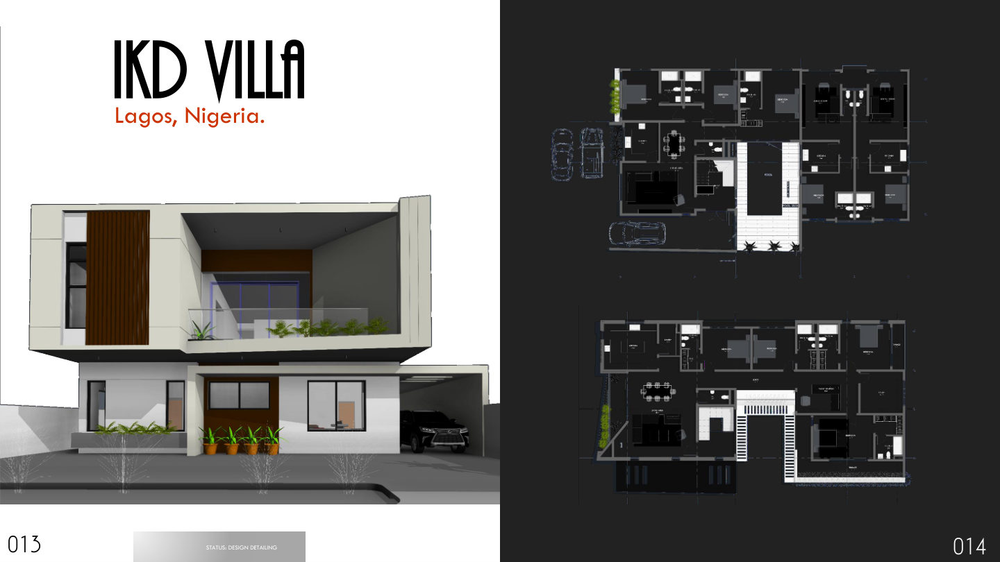
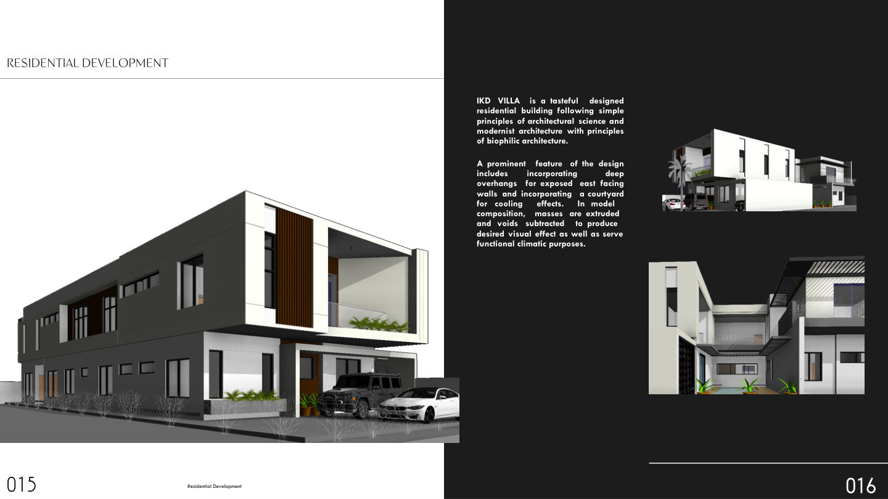
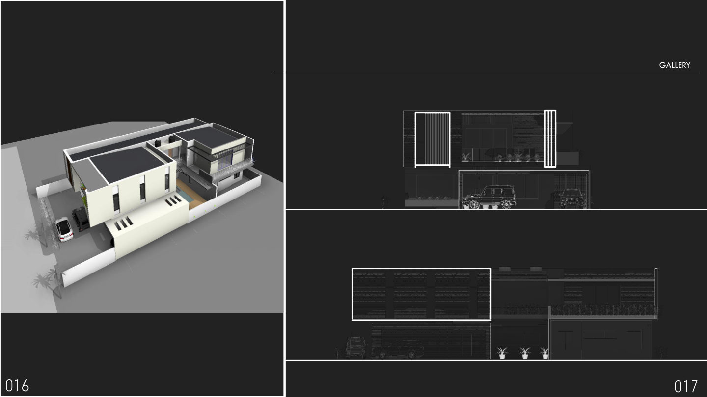

Residential Development · 2025
IKD Villa
A modernist residence shaped by simple architectural principles and biophilic thinking.
Deep overhangs protect exposed east-facing walls while a courtyard supports cooling and connection to nature. Masses are extruded and voids subtracted to produce the desired visual effect while serving functional climatic purposes.


